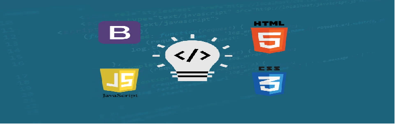

WEBSITE DESIGN
Starting from, Jan 17, 2020
Internship training leveraging website designing using HTML, CSS, and JavaScript and BootStrap making you competent to build your own website.
HTML and CSS are the core building blocks of the internet and make up what you see online every day. Just knowing syntax alone is not enough, you need to know how to put it all together. Our approach is to train you to think like a web designer. This internship is designed to train you to play with modern web design, keeping a sharp focus on real-world everyday web development skills. Understand how to use CSS in a modern approach, learning which properties are most commonly used and why.
Who this Internship is for:
Your internship will be begun on the 17th of Jan,
- Anyone who wants to learn about creating websites.
- Anyone who wants to develop a step by step understanding of HTML, CSS, JavaScript, and about making a website.
- Check the details for your live introductory meeting link in your live introductory curriculum session